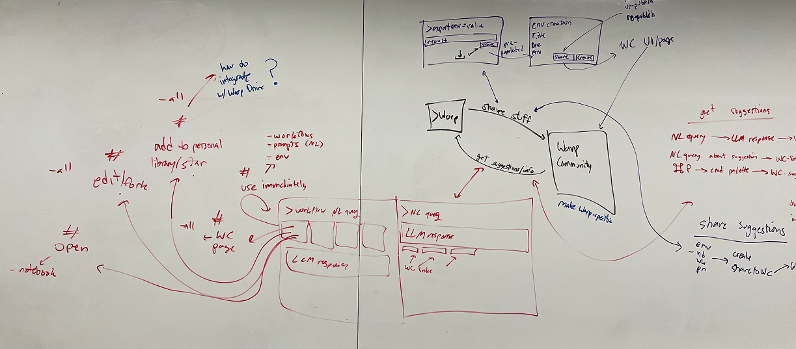

Overview
Background
Collaborators
Alexander Koong, Apoorva Talwalkar, Joshua Yang, Spandan Goel
Customer
Warp AI
Product
Warp AI Community Page

Alex, Apoorva, Josh, Spandan
Iterative Design and Evaluation
Collaborators
Alexander Koong, Apoorva Talwalkar, Joshua Yang, Spandan Goel
Customer
Warp AI
Product
Warp AI Community Page
Warp is a startup trying to modernize the conventional terminal with artificial intelligence features.
With features like automatic command completion, smart suggestions for tons of CLI tools, and numerous
quality-of-life improvements for users, Warp aims to optimize every developer’s workflow.
Through Brown’s CSCI 1300 course on interaction design, we’ve been tasked to design a community page for
Warp in an official partnership through Google Ventures. Warp Community is where users share everything
from simple workflows to complex automations, even if they’re an individual hobbyist dev or an industry
professional who relies on Warp every day.
After being onboarded to the project, we began familiarizing ourselves with Warp, its AI-augmented terminal sessions, and the “meta” objects (Prompts, Workflows, Environment Variables, and Notebooks) used, saved, and retrieved in local use of Warp. In addition to surveying competitors (Windsurf, Cursor, Claude Code, and Devin), we arrived at the present factors to inform our design of Warp Community:
Existing Considerations
Customer Motivations
Issues with Existing Solutions
Create a platform that increases all the following metrics across Warp Terminal and Warp Community:
Target Users
AI development professionals who are actively working with AI tools to build or integrate solutions. They span from intermediate developers who are looking to improve their workflow efficiency to advanced power users who create complex automations. They typically work in small to medium-sized teams, are technology early adopters, and value both practical solutions and innovation. They regularly use AI devtools but feel they're not maximizing their potential.
We started off by independently brainstorming designs for Warp Community, and drawing up the following sketches. Afterwards, we came together and synthesized components we liked from each member into a group-sketch on some whiteboards.
Consolidating, we wrapped all sorts of variations on content–such as “article”, “text thread”, “note”, and
more–into a single “post” entity that is the core unit of information for Warp Community objects. We
realized too many forms of information potentially create confusion and mental overload for the user (i.e.
avoiding four different forms for each object type). Technical users share their objects within posts (with
great flexibility offered via markdown). A unified component brings consistency and immediate familiarity to
the user.
We mocked up our whiteboard-synthesizing of our sketches into lo-fi wireframes using Balsamiq.
A weekend later, we got some feedback from the Warp team and met with Vanessa Cho, VP at Google Design. She
gave us a ton of super crucial feedback - which was to focus on the success metrics. Our design so far had
focused on providing a Warp Community interface to house shared Warp objects, but there was nothing that
prioritized the Warp Terminal user. We didn’t connect the sharing platform with the app itself.
This is something the Warp team also mentioned - why would one use Warp Community over Reddit, X, or
HackerNews? We needed to provide a competitive advantage, one that would maximize user contribution rate,
user implementation rate (usage in Warp Terminal), and most critically save time and boost engagement.
Another thing we realized was less is more. In our hyper-focused approach, we had added a lot of vestigial
components that would not be relevant to a Warp Terminal user. The users’ main pain point is about
presenting, viewing, and utilizing information in an orderly, speedy fashion. How could we connect users
within the Warp Terminal in a beneficial way with Warp Community?
So back to the whiteboard we went, and decided to think critically about the pathways users would take between Warp Community and Warp Terminal. As in, how does a workflow from someone’s Warp Drive actually end up on Warp Community? How does that same workflow save another user 3 hours of development effort?
Proposed Interactions in Warp Terminal
Proposed Interactions in Warp Community
We quickly wrote up a technical document discussing this new redesign in much more detail than before, and sent it over to the Warp team. They were pleased with this new perspective, and our new strategy was successful!
Now that our designs spanned both features within the Warp Terminal and a Warp community
platform, we created a design style guide for consistent components. This was key for the
cards that represented objects which appeared during a terminal session or a Warp Community
search.
In closing the sharing loop, it needed to be as easy as possible for a user to both run a
shared object and share their own.
Common, consistent UI for the proposed “sharing” and “implementing” interactions -- that
came out of iterating on feedback -- help facilitate the flows from Warp Terminal to Warp
Community and back.
Warp Community begins with a session in Warp Terminal where users begin their AI-assistant terminal work. Just as the LLM provides suggestions to a user’s workflow, relevant objects are pulled from Warm Community to augment the LLM response and displayed as cards below the prompt which can immediately be run with a single click. Our vision was to make it as easy as possible to use Warp Community content for the average Warp user -- no need to go out of one’s way. Users can also collapse this UI to persistently opt-out (or opt back in!) from suggested community posts for a session.
A more targeted, searchable version of suggested community objects is available in the Warp Command
Palette. We extended existing UI used for quick access to a user’s local Warp Drive objects to also
have quick access to Warp Community shared objects.
Now, these shared objects are easily viewable and forkable in a seamless integration with the user’s
personal Warp Drive. Our cards are simply a UI wrapper around the core object. Since all objects are
stored in one’s Warp Drive, we added a one-click step to publish content directly to Warp Community.
This continues our vision to make it just as easy to share content to Warp Community.
We finally designed an external, web interface for Warp Community separate from the Warp Terminal.
Here users are able to search and explore shared content independent of a working session within
Warp Terminal. The landing page turns into a Discovery page upon scrolling, with both recommended
and trending objects. Using the search bar turns Discovery into Searching. Objects (and their cards)
are neatly rendered in full pages, optimized for reading over development experience. The complete
details and thought processes behind this hi-fi design can be found in this demo Loom video:
txt here